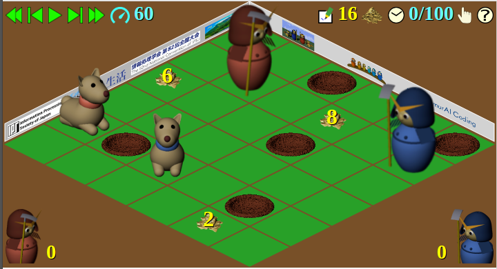

IPSJ Programming Contest Committee
Draft as of 2019/08/31
This document gives the rules of the SamurAI Dig Here game, played in the programming contest SamurAI Coding 2019-20 organized by Information Processing Society of Japan.
The rules described here are tentative and subject to change.
The game is a zero-sum game with imperfect information, played by two teams each with two player agents controlled by programs provided by the contestants. The objective of the game is to dig out as much treasure buried in the game field as possible.
The game field has a square shape, divided into small squares called cells aligned in a square lattice. The size of the game field, that is, the number of cells in one side of the field may differ from one game to another. The minimum size is six.
The figure to the right is a bird’s eye view of the square game field from a diagonal direction.
Both teams have two agents each, one samurai and one dog.
Game agents are controlled by programs provided by the contestants. A single program is run as two separate processes, one for controlling the samurai and one for the dog of a team. They share only those information provided by the game management system. No other communication is possible.
When the game starts, agents are positioned in some distinct cells in the field. More than one agents cannot be in the same cell at a time throughout a game.
In one step of a game, a samurai agent can move to one of the four neighboring cells, that is, those cells that share a edge with the cell the samurai is in. A dog agent can move to one of the eight neighboring cells, that is, those cell that share one or two corners with the cell the dog is in. They can also stay in the cell they are in.
When two or more agents are instructed to move to the same cell, none of the agents can make their moves. All such agents are kept in their original positions.
Some of the cells in the field may have a hole in them, preventing game agents to step into. A samurai agents can, however, instead of making a move, plug a hole in one of the four neighboring cells. Samurai can also dig new holes in the four neighboring cells. Digging a new hole is not possible if another agent is already in the cell or moves to the cell in the same step.
No holes are in the cells where a agents are initially in.
Some of the cells in the field may have buried treasure in them. Digging a new hole in a cell with buried treasure digs it out. If samurai of both teams dig a hole in the same cell in the same step, the treasure dug out is halved and shared by the two teams. The amounts of buried treasure are always an even number.
A dog in one of the eight neighboring cells of the cell with buried treasure can sense the position as well as its amount, but they are not informed to the rest of agents. Dogs bark when they step into a cell with buried treasure, making the treasure position and its amount known to all the other agents. Not only the colleague samurai but also the opponent samurai and the opponent dog hear the bark.
Treasures are not buried in the initial positions of agents.
A game is played in a step-wise manner. When a game step starts, all the agents make their play plans of the step simultaneously. The play plans are checked their validity and also collated to detect conflicts between them, resulting in a set of actions the agents can actually take. The actions are then carried out and the field state is updated.
Game steps are repeated until the predefined maximum number of steps are played or all the buried treasures have been excavated.
The contestant should provide a player program for controlling two agents, a samurai and a dog, belonging to the team.
The game management system starts two player processes for each of the two teams. The two player processes of one teams execute the same program, one of which controls the samurai and the other the dog of the team. Which agent to control is informed by the game management system after the processes are started.
The player processes have no direct communication paths between them; the only communication possible is with the game management system.
At the start of each of the game step, the game management system sends information on the game state to those player processes. Each player process should receive the information and respond with a play plan for the corresponding agent.
The game state information sent from the game manager can be read from the standard input of the player process. The play plan in its response should be sent to the standard output.
The play plans are the plans of agents' plays sent by the player programs, and the actions are the plays actually taken by the agents decided by the game management system after validity conflict checks.
For example, if two agents' play plans tell to move to the same cell, their plans conflict each other, and thus the game management system makes both of the agents stop. If a samurai plans to dig a new hole in a cell and another agent plans to move to the same cell, the move has the precedence and the digging will be unsuccessful. If, however, two other agents plan to move to the cell in which a dig is planned, the moves conflict with each other and are canceled, and the dig will be effective.
Each of play plans and actions is represented as an integer m (-1 ≤ m ≤ 23), meaning the following.
| x−1 | x | x+1 | |
|---|---|---|---|
| y−1 | 3 | 4 | 5 |
| y | 2 | 6 | |
| y+1 | 1 | 0 | 7 |
Samurai can move to or dig/plug a hole in one of four neighboring cells. Thus d above must be even. A play plans of a samurai is called invalid if it is neither a non-negative even number less than or equal to 22 nor −1.
Dog cannot dig or plug a hole. A play plan of a dog less than −1 or greater than 7 is invalid.
Invalid play plans are treated the same as −1. Not only the action of the agent becomes −1, but also the play plan recorded in the game state information, described below, becomes −1 [1].
On the other hand, if a play plan cannot be carried out because of cell states and/or positions and moves of agents, the plans are inoperable.
Moving to, or trying to dig or plug a hole outside of the field is inoperable. Digging a hole in a cell already with a hole or plugging a non-existent hole is inoperable. Moving to or digging/plugging a hole in a cell where another agent is in at the start of a step is also inoperable.
When two or more agents plan to move to the same cell in the same step, all such moves are inoperable. Digging a hole in a cell to which another agent moves to in the same step is inoperable. Digging a hole in a cell can be carried out, however, when two or more agents plan to move to the cell and their moves are inoperable.
The action taken for an inoperable plan also becomes −1, but, unlike invalid plans, the play plan is recorded in the game state information as it is.
The game state information sent from the game management system to the player processes at the beginning of each step contains the following items, in this order.
All the items describes as lists above start with the number of items in the list (an integer). For an empty list, it is 0. Descriptions of items in the list, if any, follow it. Each item may consist of one or more integers.
Positions of cells are represented by two integers, meaning the x- and y-coordinates of the cell. The coordinate values are non-negative integers less than the field size.
Buried treasures are represented by three integers. The first two of them are the coordinates of the cell the treasure is buried in, and the third is the amount of the treasure, which is an even positive integer.
As described above, all the items in the game state information are given as integers. A newline is placed between the items in the itemized list above, and when two or more integers in an item, they are separated by a space. A newline follows the last item.
In response to the game state information received, the player program should send a play plan for the correspondent agent. The play plan is an integer with the meaning described above. A newline should follow the play plan.
A limit is set on the total think time of player processes. The think time is the period of time between when the game state information is sent to the player process and when its response, a play plan, is received by the game management system. Note that it is wallclock time rather than CPU time. The think time of each step is accumulated and the limit is set on the total.
The think time limit is set for each of the player processes; think times of the samurai and the dog of the same team are accumulated independently.
When this time limit is exceeded, the player process is assumed to respond with −1 (stay in the same position) for all the remaining steps.
The value of the think time limit is given for each game.
One match between two teams consists of two games with the same initial configuration except that the initial positions of the agents are swapped between two teams. The result of the match is judged by the total amounts of treasure dug out in two games.